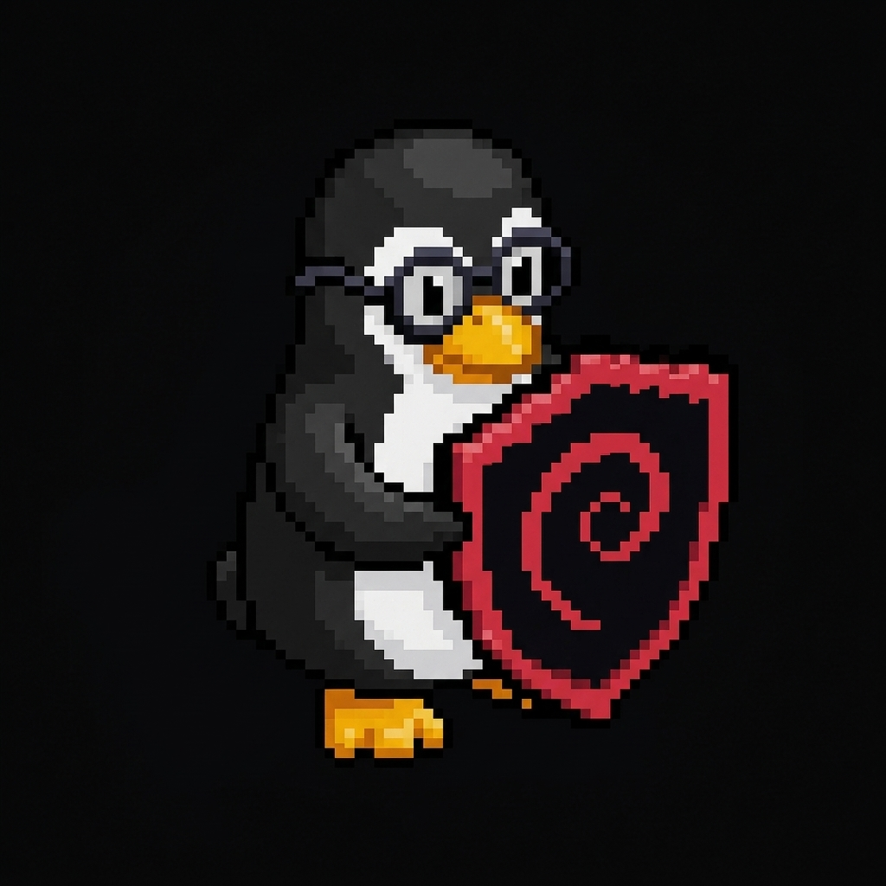

admins| Usuario | joaquin |
| Grupos AD | adminssistemassrv-files |
| Acceso SSH | permitido (AllowUsers) · solo desde admin_ips 192.168.0.50 |
| Equipo | pc-joaquin — 192.168.0.50 (MAC f8:54:f6:e2:f1:d5, reservada en Kea) |
TSO-II-final (diseño inicial + configuración del server).